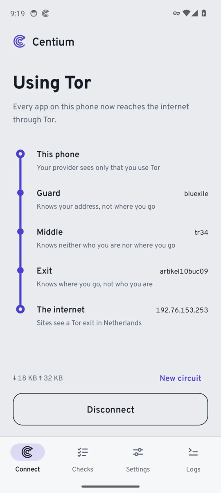

Every app on your phone, through Tor.
Tap Connect and all of your phone's traffic reaches the internet through three Tor relays. Websites and your internet provider can't link what you do to who you are.
Download for Android
SHA-256

How your traffic travels
- This phoneYour provider sees only that you use Tor
- Guard relayKnows your address, not where you go
- Middle relayKnows neither who you are nor where you go
- Exit relayKnows where you go, not who you are
- The internetSites see a Tor exit, not you
Unlike a regular VPN, there's no company in the middle that sees everything. The relays are run by volunteers, and no single relay knows both who you are and where you go.
What you get
- Works for every appNot just a browser. No root needed.
- Your route at a glanceSee the relays you're using and the country websites see you in.
- Name lookups through TorResolved at the exit, never by your provider.
- Block traffic if Tor dropsApps stay offline instead of falling back to your real address.
- Choices when you need themBlock IPv6, pick an exit country, or add your own bridge relays if Tor is blocked where you are.
- Built-in leak testChecks your live connection on demand.
- Updates itselfNew versions install over the old one, checked against the same signing key.
Good to know
- Tor is slowerPages take longer to load, and some websites block Tor.
- No voice or video callsApps that use UDP, like most calls and many games, won't work while connected. Tor carries TCP only.
- BridgesPlain bridge relays work. obfs4 and Snowflake aren't supported yet.
Install it
- Tap Download for Android on your phone.
- Open the file. If Android asks, allow your browser to install apps.
- Open Centium and tap Connect. Android asks once to allow the VPN.
Already have Centium from F-Droid? That copy is signed by F-Droid, so it can't be updated with this download. Uninstall it first, or keep updating through F-Droid.